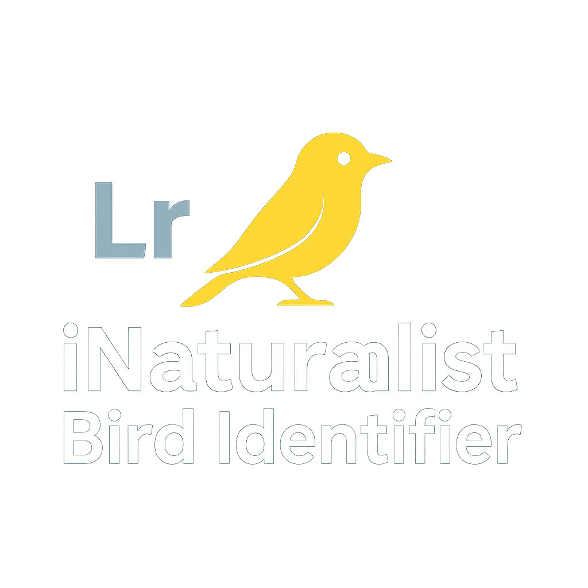

⚠ Warning
The use of this plugin is
at your own risk. The author and contributors cannot be held responsible for any data loss, catalog corruption, or damage to your images in Lightroom.
Before using:
- Make a full backup of your Lightroom catalog.
- Ensure that your original images are backed up.
- Test the plugin on a copy of your catalog or your images before using it in production.
By using this plugin, you acknowledge that you have read these precautions and agree to follow them.
🌿 iNaturalist Identifier
🇫🇷 Lire en français

A plugin for Lightroom Classic that identifies species in photos using the iNaturalist API.
📌 Table of Contents
🐾 Overview
The iNaturalist Identifier plugin integrates with Adobe Lightroom Classic to help photographers automatically identify species visible in their shots. It uses the iNaturalist API to analyze selected images and adds identification tags based on the results.
✨ Features
- 📤 Send photos to the iNaturalist image recognition API
- 🏷️ Automatic tagging with identified species
- 📚 Batch processing of photos
- 🔍 Display detailed API responses for each image
- 🧩 Lightweight and simple plugin, developed in Lua
⚙️ Installation
- 📥 Download the latest release
- Open Lightroom Classic
- Go to File > Plug-in Manager
- Click Add and select the plugin folder
- Confirm installation
🔐 Configuration
The plugin requires an iNaturalist API access token:
- Create an account on iNaturalist
- From the plugin, access the token generation page
- Copy the token found between the ""
- Enter the token in the plugin panel in Lightroom
⚠️ Note: Tokens are only valid for 24 hours.
🖼️ Usage
- Select one or more photos in the Lightroom library
- Use the plugin menu to send them to the iNaturalist API
- Review and apply the species tags according to the results
📁 Plugin Structure
| File | Description |
|---|
Info.lua | Plugin metadata and entry point |
AnimalIdentifier.lua | Handles image sending and API calls |
call_inaturalist.lua | Sends requests and processes responses |
SelectAndTagResults.lua | Interface to select and tag species |
json.lua | Utility functions for JSON |
🧩 Dependencies
- Adobe Lightroom Classic (Lua plugin support)
- Internet connection
- Standard Lua libraries (included with Lightroom)
🛠️ Development
- Fork the repository (GitHub)
- Make your changes
- Submit a pull request
💻 The source code is available on
GitHub
.

📄 License
This project is under the MIT license. See the LICENSE file.
Developed by Philippe Branly.
☕ Support the Project